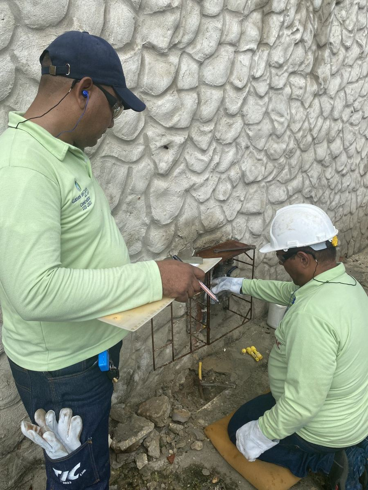

Suspendemos y reconectamos desde la acometida con rapidez y precisión, garantizando la continuidad del servicio. Cada reconexión se verifica en sitio antes de cerrar la orden ante la empresa aliada.
Solicitar este servicioLos mismos estándares en cada visita, sin importar la ciudad.
Escríbenos con los datos del punto a intervenir.